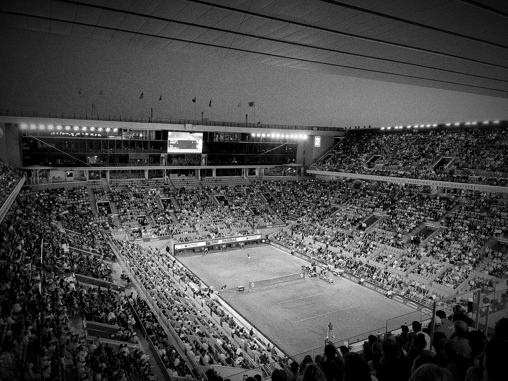

Sports · Tennis
Roland-Garros 2027
- Dates
- –
- Venue
- Stade Roland-Garros
- Location
- Paris, France
- Format
- In-person
- Category
- Tennis
- Industry
- Tennis
- Organiser
- Fédération Française de Tennis
- Official website
- https://www.rolandgarros.com/
About
Dates are local civil dates for the official Roland-Garros 2027 window at Stade Roland-Garros, including Opening Week from 17 May and the main draw from 23 May through 6 June, as published on rolandgarros.com.
Topics: Grand Slam, tennis, Roland-Garros.
No organiser attendance figure found on the official pages fetched 24 Nov 2026 for this upcoming edition. Ranked by our estimated size tier 'very large' (100,000+ attendees/visits), a judgement from format, venue and scale, not an official number.
Sources
- Official — https://www.rolandgarros.com/en-us/article/2027-ticketing-roland-garros-draw-registration-ticket-sales
- Official — https://www.rolandgarros.com/
- Official — https://www.atptour.com/-/media/files/calendar-pdfs/2026/2027-atp-tour-calendar-14-january-2026-updated.pdf
- Official — https://api.wtatennis.com/tennis/tournaments/903/2027